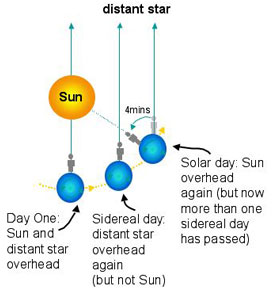

The sidereal day is the time it takes for the Earth to complete one rotation about its axis with respect to the ‘fixed’ stars. By fixed, we mean that we treat the stars as if they were attached to an imaginary celestial sphere at a very large distance from the Earth.
A measurement of the sidereal day is made by noting the time at which a particular star passes the celestial meridian (i.e. directly overhead) on two sucessive nights. On Earth, a sidereal day lasts for 23 hours 56 minutes 4.091 seconds, which is slightly shorter than the solar day measured from noon to noon.
Our usual definition of an Earth day is 24 hours, so the sidereal day is 4 minutes faster. This means that a particular star will rise 4 minutes earlier every night, and is the reason why different constellations are only visible at specific times of the year.